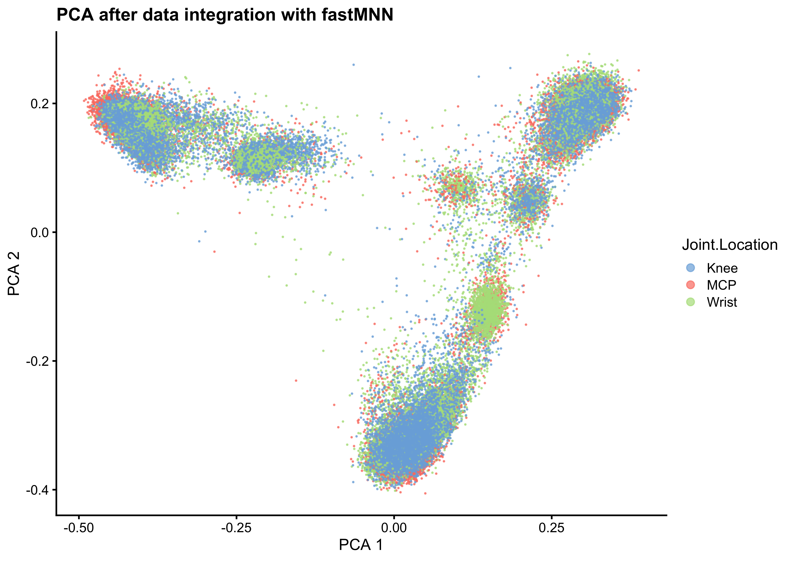
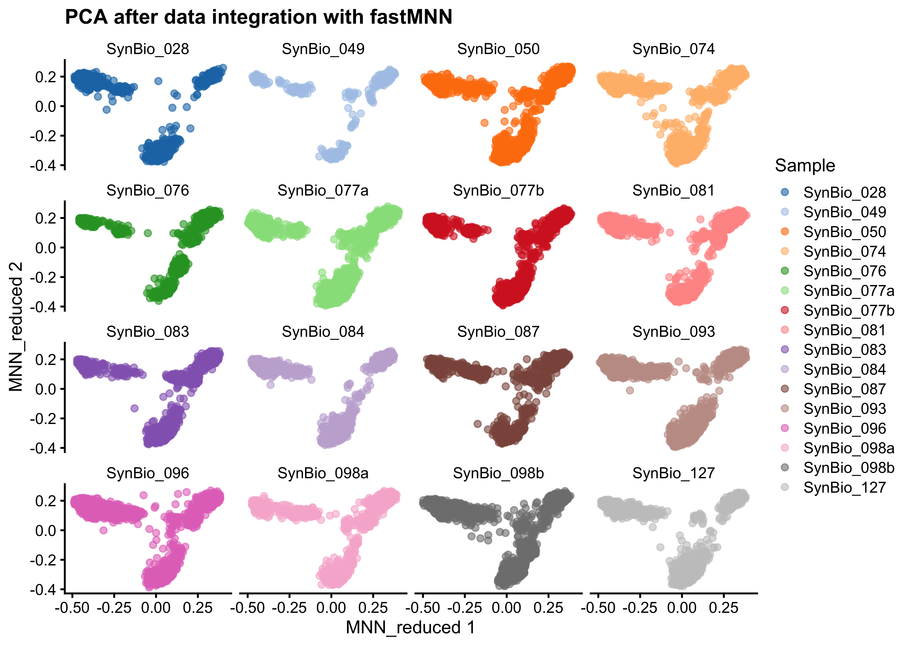
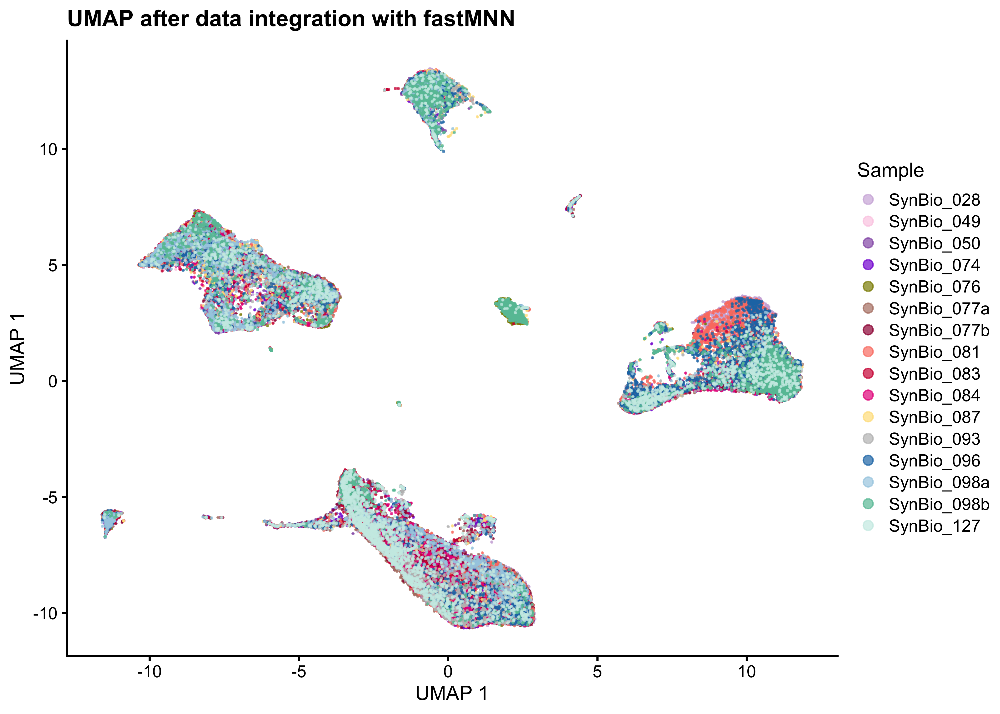
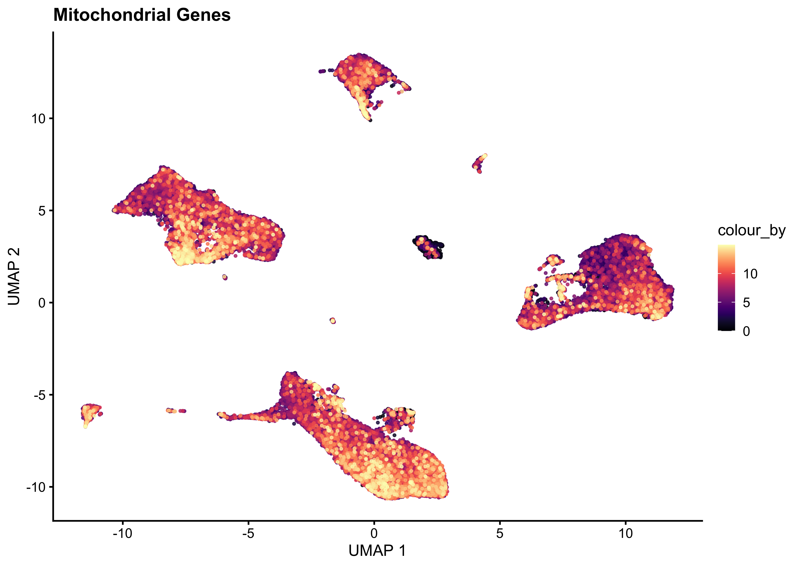
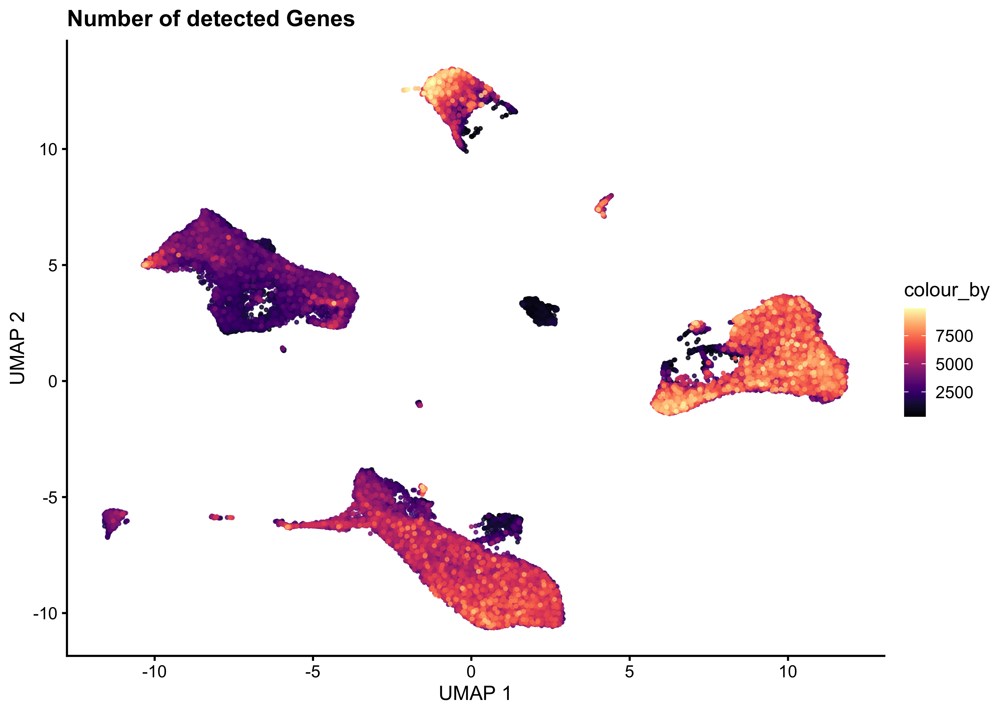
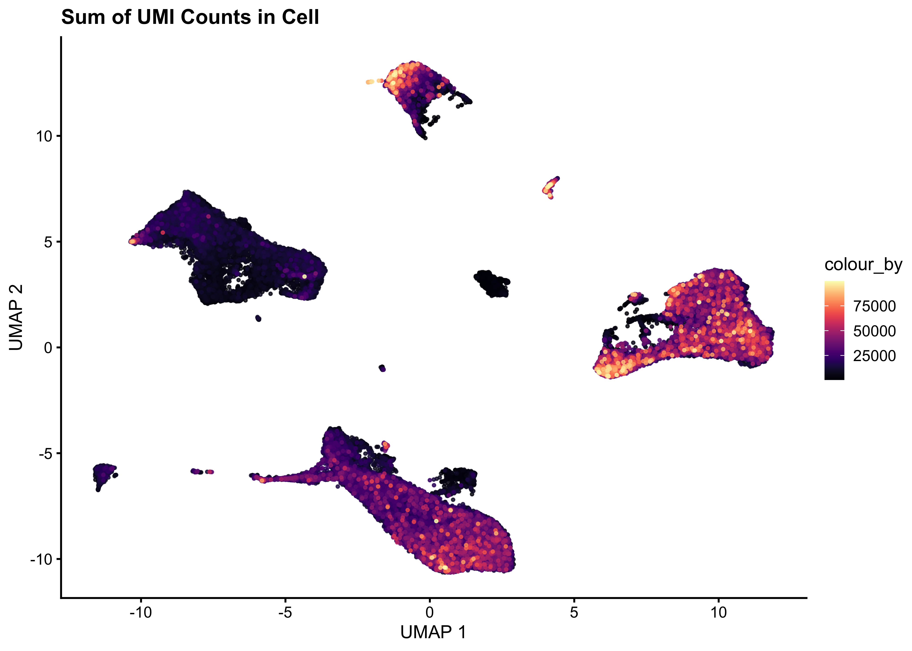

Batch correction and data set integration
03_Integration_Batchelor
SarahL.
May 24 2024 14:39:18
Last updated: 2024-05-24
Checks: 6 1
Knit directory: RA_SingleCellAnalysis/
This reproducible R Markdown analysis was created with workflowr (version 1.7.1). The Checks tab describes the reproducibility checks that were applied when the results were created. The Past versions tab lists the development history.
The R Markdown file has unstaged changes. To know which version of
the R Markdown file created these results, you’ll want to first commit
it to the Git repo. If you’re still working on the analysis, you can
ignore this warning. When you’re finished, you can run
wflow_publish to commit the R Markdown file and build the
HTML.
Great job! The global environment was empty. Objects defined in the global environment can affect the analysis in your R Markdown file in unknown ways. For reproduciblity it’s best to always run the code in an empty environment.
The command set.seed(20240328) was run prior to running
the code in the R Markdown file. Setting a seed ensures that any results
that rely on randomness, e.g. subsampling or permutations, are
reproducible.
Great job! Recording the operating system, R version, and package versions is critical for reproducibility.
Nice! There were no cached chunks for this analysis, so you can be confident that you successfully produced the results during this run.
Great job! Using relative paths to the files within your workflowr project makes it easier to run your code on other machines.
Great! You are using Git for version control. Tracking code development and connecting the code version to the results is critical for reproducibility.
The results in this page were generated with repository version 906ed8c. See the Past versions tab to see a history of the changes made to the R Markdown and HTML files.
Note that you need to be careful to ensure that all relevant files for
the analysis have been committed to Git prior to generating the results
(you can use wflow_publish or
wflow_git_commit). workflowr only checks the R Markdown
file, but you know if there are other scripts or data files that it
depends on. Below is the status of the Git repository when the results
were generated:
Ignored files:
Ignored: .DS_Store
Ignored: .Rhistory
Ignored: .Rproj.user/
Ignored: data/.DS_Store
Ignored: data/cellbender_data_h5/
Ignored: output/00_sce_DataPreparation.rds
Ignored: output/01_sce_QualityControl.rds
Ignored: output/01_sce_QualityControl_filtered.rds
Ignored: output/02_sce_DimensionalityReduction.rds
Ignored: output/03_sce_Integration_Batchelor.rds
Ignored: output/03_sce_Integration_Harmony.rds
Ignored: output/04_sce_Clustering.rds
Ignored: output/05_sce_CelltypeAnnotation.rds
Ignored: output/06_sce_SC_Endothelial.rds
Ignored: output/06_sce_SC_Fibroblast.rds
Ignored: output/06_sce_SC_Myeloid.rds
Ignored: output/06_sce_SC_Tcell.rds
Ignored: output/08_DifferentialAbundance_miloR.rds
Ignored: output/Cluster_Marker_Genes.xlsx
Ignored: output/MAST_KneeVsMCP.csv
Ignored: output/MAST_KneeVsWrist.csv
Ignored: output/MAST_MCPVsWrist.csv
Unstaged changes:
Modified: analysis/01_QualityControl.Rmd
Modified: analysis/03_Integration_Batchelor.Rmd
Modified: analysis/05_CelltypeAnnotation.Rmd
Note that any generated files, e.g. HTML, png, CSS, etc., are not included in this status report because it is ok for generated content to have uncommitted changes.
These are the previous versions of the repository in which changes were
made to the R Markdown
(analysis/03_Integration_Batchelor.Rmd) and HTML
(docs/03_Integration_Batchelor.html) files. If you’ve
configured a remote Git repository (see ?wflow_git_remote),
click on the hyperlinks in the table below to view the files as they
were in that past version.
| File | Version | Author | Date | Message |
|---|---|---|---|---|
| html | 1337447 | sarloet | 2024-05-22 | Build site. |
| Rmd | ed4a9ca | sarloet | 2024-05-21 | fix |
| html | ed4a9ca | sarloet | 2024-05-21 | fix |
| html | b3be2d8 | sarloet | 2024-05-15 | Build site. |
| Rmd | 69f37f0 | sarloet | 2024-05-14 | fix |
| html | 69f37f0 | sarloet | 2024-05-14 | fix |
| html | 14ca55c | sarloet | 2024-05-13 | fix |
| html | b04fd2c | sarloet | 2024-05-07 | fx |
| html | 54eba19 | sarloet | 2024-05-06 | fix |
| Rmd | d18442a | sarloet | 2024-05-06 | fix |
| html | d18442a | sarloet | 2024-05-06 | fix |
| html | d0eec17 | sarloet | 2024-05-01 | Build site. |
| Rmd | 336969d | sarloet | 2024-05-01 | fix |
| html | e0e84d8 | sarloet | 2024-05-01 | Build site. |
| html | 5f9a714 | sarloet | 2024-05-01 | Build site. |
| html | 729c9a9 | sarloet | 2024-05-01 | Build site. |
| Rmd | f1e1957 | sarloet | 2024-05-01 | Fix |
| html | 68a1f82 | sarloet | 2024-05-01 | Build site. |
| html | 3973113 | sarloet | 2024-04-30 | Build site. |
| html | f897f6e | sarloet | 2024-04-30 | Build site. |
| Rmd | 2071a14 | sarloet | 2024-04-30 | fix |
| html | fafa13f | sarloet | 2024-04-30 | Build site. |
| Rmd | 90b5176 | sarloet | 2024-04-30 | fix |
| html | 3f073e5 | sarloet | 2024-04-30 | Build site. |
| Rmd | aa29156 | sarloet | 2024-04-30 | Fix |
| html | fa7cedd | sarloet | 2024-04-29 | Build site. |
| Rmd | c59bd01 | sarloet | 2024-04-29 | Informative commit message |
| html | d39d1f7 | sarloet | 2024-04-29 | Build site. |
| html | ceca7c8 | sarloet | 2024-04-29 | Build site. |
| Rmd | 8112701 | sarloet | 2024-04-29 | fix |
| Rmd | d54662b | sarloet | 2024-04-26 | fix |
| Rmd | 72659ad | sarloet | 2024-04-25 | fix |
| Rmd | 9bcde0b | sarloet | 2024-04-25 | fix |
| Rmd | a4a9b77 | sarloet | 2024-04-23 | fix |
| Rmd | f73b2cd | sarloet | 2024-04-19 | fix |
| Rmd | 4f7c5d3 | sarloet | 2024-04-18 | fix |
| Rmd | 530ec4b | sarloet | 2024-04-05 | fix |
| Rmd | 64ae186 | sarloet | 2024-04-05 | fix |
| html | de05002 | sarloet | 2024-04-05 | Build site. |
| Rmd | 13ed2ab | sarloet | 2024-04-05 | Add Integration |
| Rmd | ccc483f | sarloet | 2024-04-05 | fix |
| Rmd | 1def092 | sarloet | 2024-04-04 | fix |
| Rmd | d41ba14 | sarloet | 2024-04-03 | fix |
| Rmd | eb121be | sarloet | 2024-04-03 | fix |
| Rmd | 998977b | sarloet | 2024-04-02 | fix |
| Rmd | d291fd3 | sarloet | 2024-04-02 | initial commit |
Batch correction and data set integration
Setup
Standard packages
library(here)
source(here("code", "standard_libraries.R"))Additional Packages
#Load Packages
suppressPackageStartupMessages({
library(batchelor)
library(reticulate)
library(bluster)
library(intrinsicDimension)
})Set Parameter
set.seed(123)
bpp <- BiocParallel::MulticoreParam(parallel::detectCores()-1, RNGseed=123)
path <- here::here()Load Data
## RA DATASET
sce <- readRDS(file = paste0(path,'/output/02_sce_DimensionalityReduction.rds'))Explore Dataset
#Dimensions of count matrix
dim(sce)[1] 30488 65418Pre-Batch Correction Plots
PCA
#Plot UMAP before data integration
plotReducedDim(sce, dimred="PCA", colour_by="Sample")
| Version | Author | Date |
|---|---|---|
| ed4a9ca | sarloet | 2024-05-21 |
| 69f37f0 | sarloet | 2024-05-14 |
| 14ca55c | sarloet | 2024-05-13 |
| b04fd2c | sarloet | 2024-05-07 |
| 54eba19 | sarloet | 2024-05-06 |
| d18442a | sarloet | 2024-05-06 |
| d0eec17 | sarloet | 2024-05-01 |
| e0e84d8 | sarloet | 2024-05-01 |
| 5f9a714 | sarloet | 2024-05-01 |
| 729c9a9 | sarloet | 2024-05-01 |
| 68a1f82 | sarloet | 2024-05-01 |
| 3973113 | sarloet | 2024-04-30 |
| f897f6e | sarloet | 2024-04-30 |
| fafa13f | sarloet | 2024-04-30 |
| 3f073e5 | sarloet | 2024-04-30 |
| d39d1f7 | sarloet | 2024-04-29 |
| ceca7c8 | sarloet | 2024-04-29 |
| de05002 | sarloet | 2024-04-05 |
UMAP
#Plot UMAP before data integration
plotReducedDim(sce, dimred="UMAP", colour_by="Sample")
| Version | Author | Date |
|---|---|---|
| ed4a9ca | sarloet | 2024-05-21 |
| 69f37f0 | sarloet | 2024-05-14 |
| 14ca55c | sarloet | 2024-05-13 |
| b04fd2c | sarloet | 2024-05-07 |
| 54eba19 | sarloet | 2024-05-06 |
| d18442a | sarloet | 2024-05-06 |
| d0eec17 | sarloet | 2024-05-01 |
| e0e84d8 | sarloet | 2024-05-01 |
| 5f9a714 | sarloet | 2024-05-01 |
| 729c9a9 | sarloet | 2024-05-01 |
| 68a1f82 | sarloet | 2024-05-01 |
| 3973113 | sarloet | 2024-04-30 |
| f897f6e | sarloet | 2024-04-30 |
| fafa13f | sarloet | 2024-04-30 |
| 3f073e5 | sarloet | 2024-04-30 |
| fa7cedd | sarloet | 2024-04-29 |
| d39d1f7 | sarloet | 2024-04-29 |
| ceca7c8 | sarloet | 2024-04-29 |
| de05002 | sarloet | 2024-04-05 |
Batch Removal with MNN
The Mutual Nearest Neighbours (MNN) algorithm works by determining if pairs of cells from two different batches are within the top K closest neighbours of each other.
Run Batchelor
#Perform scaling normalization within each batch
sce.Batchelor <-multiBatchNorm(sce, batch=sce$Sample, subset.row = rownames(sce)[rowData(sce)[["is_hvg"]]], normalize.all=TRUE, BPPARAM = bpp)
summary(sizeFactors(sce.Batchelor)) Min. 1st Qu. Median Mean 3rd Qu. Max.
0.00001 0.67407 1.26979 2.19829 2.28575 94.61714 Batches are merged in a pairwise manner (first two batches are merged to create a new cohort, then the next batch is merged with this new cohort, and so on until all batches have been integrated). Batch correction will work more effectively between batches with large number of cells and between batches that have many cells of the same cell type. As a result it is often beneficial to specify the order in which batches should be combined.
#Set manual merge_order
merge_order <- list(list("SynBio_077a","SynBio_093", "SynBio_096","SynBio_098a", "SynBio_127"),#Knee
list("SynBio_050", "SynBio_074", "SynBio_077b","SynBio_083","SynBio_084","SynBio_098b"),#Wrist
list("SynBio_028", "SynBio_049", "SynBio_076", "SynBio_081", "SynBio_087"))#MCP,"SynBio_130"#Perform fastMNN
bpstart(bpp)
sce.Batchelor <- fastMNN(sce.Batchelor, batch=sce.Batchelor$Sample, subset.row = rownames(sce.Batchelor)[rowData(sce.Batchelor)[["is_hvg"]]],prop.k=0.01, merge.order = merge_order, correct.all=TRUE,BPPARAM = bpp)#auto.merge =TRUE
bpstop(bpp)
#Save to BatchR sce object
assay(sce, "reconstructed") <- assay(sce.Batchelor, "reconstructed")
reducedDim(sce, 'MNN') <- reducedDim(sce.Batchelor, 'corrected')QC Plots Batchelor
We use the percentage of variance lost as a diagnostic measure. Large proportions of lost variance (>10%) suggest that correction is removing genuine biological heterogeneity.
#Percentage Variance lost
data.frame(metadata(sce.Batchelor)$merge.info$lost.var)rm(sce.Batchelor)Chosing the number of PCs after correction
elbow <- ceiling(as.numeric(maxLikGlobalDimEst(as.matrix(reducedDim(sce, "MNN")), k=10)))
cat(paste0("Elbow Point: ",elbow))Elbow Point: 16#PCA select nr of PC
reducedDim(sce,"MNN_reduced") <- reducedDim(sce,"MNN")[,seq_len(elbow)]
reducedDimNames(sce)[1] "PCA" "PCA_reduced" "UMAP" "MNN" "MNN_reduced"ncol(reducedDim(sce,"MNN"))[1] 50ncol(reducedDim(sce,"MNN_reduced"))[1] 16PCA Plots after Integration
Colored by Sample
#Plot PCA after data integration
plotReducedDim(sce, dimred="MNN_reduced", colour_by="Sample") + ggtitle("PCA after data integration with fastMNN")
| Version | Author | Date |
|---|---|---|
| ed4a9ca | sarloet | 2024-05-21 |
| 69f37f0 | sarloet | 2024-05-14 |
| 14ca55c | sarloet | 2024-05-13 |
| b04fd2c | sarloet | 2024-05-07 |
| 54eba19 | sarloet | 2024-05-06 |
| d18442a | sarloet | 2024-05-06 |
| d0eec17 | sarloet | 2024-05-01 |
| e0e84d8 | sarloet | 2024-05-01 |
| 5f9a714 | sarloet | 2024-05-01 |
| 729c9a9 | sarloet | 2024-05-01 |
| 68a1f82 | sarloet | 2024-05-01 |
| 3973113 | sarloet | 2024-04-30 |
| f897f6e | sarloet | 2024-04-30 |
| fafa13f | sarloet | 2024-04-30 |
| 3f073e5 | sarloet | 2024-04-30 |
| d39d1f7 | sarloet | 2024-04-29 |
| ceca7c8 | sarloet | 2024-04-29 |
| de05002 | sarloet | 2024-04-05 |
Colored by Joint
#Plot PCA after data integration
plotReducedDim(sce, dimred="MNN_reduced", colour_by="Joint.Location") + ggtitle("PCA after data integration with fastMNN")
| Version | Author | Date |
|---|---|---|
| ed4a9ca | sarloet | 2024-05-21 |
| 69f37f0 | sarloet | 2024-05-14 |
| 14ca55c | sarloet | 2024-05-13 |
| b04fd2c | sarloet | 2024-05-07 |
| 54eba19 | sarloet | 2024-05-06 |
| d18442a | sarloet | 2024-05-06 |
| d0eec17 | sarloet | 2024-05-01 |
| e0e84d8 | sarloet | 2024-05-01 |
| 5f9a714 | sarloet | 2024-05-01 |
| 729c9a9 | sarloet | 2024-05-01 |
| 68a1f82 | sarloet | 2024-05-01 |
| 3973113 | sarloet | 2024-04-30 |
| f897f6e | sarloet | 2024-04-30 |
| fafa13f | sarloet | 2024-04-30 |
| 3f073e5 | sarloet | 2024-04-30 |
| d39d1f7 | sarloet | 2024-04-29 |
| ceca7c8 | sarloet | 2024-04-29 |
| de05002 | sarloet | 2024-04-05 |
Facet by Sample
#Plot PCA after data integration per sample
plotReducedDim(sce, dimred="MNN_reduced", colour_by="Sample") + ggtitle("PCA after data integration with fastMNN")+ facet_wrap(~sce$Sample)+ theme(strip.background=element_rect(fill="white"))
| Version | Author | Date |
|---|---|---|
| ed4a9ca | sarloet | 2024-05-21 |
| 69f37f0 | sarloet | 2024-05-14 |
| 14ca55c | sarloet | 2024-05-13 |
| b04fd2c | sarloet | 2024-05-07 |
| 54eba19 | sarloet | 2024-05-06 |
| d18442a | sarloet | 2024-05-06 |
| d0eec17 | sarloet | 2024-05-01 |
| e0e84d8 | sarloet | 2024-05-01 |
| 5f9a714 | sarloet | 2024-05-01 |
| 729c9a9 | sarloet | 2024-05-01 |
| 68a1f82 | sarloet | 2024-05-01 |
| 3973113 | sarloet | 2024-04-30 |
| f897f6e | sarloet | 2024-04-30 |
| fafa13f | sarloet | 2024-04-30 |
| 3f073e5 | sarloet | 2024-04-30 |
| d39d1f7 | sarloet | 2024-04-29 |
| ceca7c8 | sarloet | 2024-04-29 |
| de05002 | sarloet | 2024-04-05 |
Facet by Joint
#Plot PCA before data integration per joint
plotReducedDim(sce, dimred="MNN_reduced", colour_by="Joint.Location") + ggtitle("PCA after data integration with fastMNN")+ facet_wrap(~sce$Joint.Location)+ theme(strip.background=element_rect(fill="white"))
| Version | Author | Date |
|---|---|---|
| ed4a9ca | sarloet | 2024-05-21 |
| 69f37f0 | sarloet | 2024-05-14 |
| 14ca55c | sarloet | 2024-05-13 |
| b04fd2c | sarloet | 2024-05-07 |
| 54eba19 | sarloet | 2024-05-06 |
| d18442a | sarloet | 2024-05-06 |
| d0eec17 | sarloet | 2024-05-01 |
| e0e84d8 | sarloet | 2024-05-01 |
| 5f9a714 | sarloet | 2024-05-01 |
| 729c9a9 | sarloet | 2024-05-01 |
| 68a1f82 | sarloet | 2024-05-01 |
| 3973113 | sarloet | 2024-04-30 |
| f897f6e | sarloet | 2024-04-30 |
| fafa13f | sarloet | 2024-04-30 |
| 3f073e5 | sarloet | 2024-04-30 |
| d39d1f7 | sarloet | 2024-04-29 |
| ceca7c8 | sarloet | 2024-04-29 |
| de05002 | sarloet | 2024-04-05 |
UMAP Plots after Integration
#Run UMAP
sce <- runUMAP(sce ,name = "MNN_UMAP", dimred = "MNN")
sce <- runUMAP(sce ,name = "MNN_UMAP_reduced", dimred = "MNN_reduced")Colored by Sample
#Plot UMAP after data integration
plotReducedDim(sce, dimred="MNN_UMAP_reduced", colour_by="Sample") + ggtitle("UMAP after data integration with fastMNN")
| Version | Author | Date |
|---|---|---|
| ed4a9ca | sarloet | 2024-05-21 |
| 69f37f0 | sarloet | 2024-05-14 |
| 14ca55c | sarloet | 2024-05-13 |
| b04fd2c | sarloet | 2024-05-07 |
| 54eba19 | sarloet | 2024-05-06 |
| d18442a | sarloet | 2024-05-06 |
| d0eec17 | sarloet | 2024-05-01 |
| e0e84d8 | sarloet | 2024-05-01 |
| 5f9a714 | sarloet | 2024-05-01 |
| 729c9a9 | sarloet | 2024-05-01 |
| 68a1f82 | sarloet | 2024-05-01 |
| 3973113 | sarloet | 2024-04-30 |
| f897f6e | sarloet | 2024-04-30 |
| fafa13f | sarloet | 2024-04-30 |
| 3f073e5 | sarloet | 2024-04-30 |
| fa7cedd | sarloet | 2024-04-29 |
| d39d1f7 | sarloet | 2024-04-29 |
| ceca7c8 | sarloet | 2024-04-29 |
Colored by Joint
#Plot UMAP after data integration
plotReducedDim(sce, dimred="MNN_UMAP_reduced", colour_by="Joint.Location") + ggtitle("UMAP after data integration with fastMNN")
| Version | Author | Date |
|---|---|---|
| ed4a9ca | sarloet | 2024-05-21 |
| 69f37f0 | sarloet | 2024-05-14 |
| 14ca55c | sarloet | 2024-05-13 |
| b04fd2c | sarloet | 2024-05-07 |
| 54eba19 | sarloet | 2024-05-06 |
| d18442a | sarloet | 2024-05-06 |
| d0eec17 | sarloet | 2024-05-01 |
| e0e84d8 | sarloet | 2024-05-01 |
| 5f9a714 | sarloet | 2024-05-01 |
| 729c9a9 | sarloet | 2024-05-01 |
| 68a1f82 | sarloet | 2024-05-01 |
| 3973113 | sarloet | 2024-04-30 |
| f897f6e | sarloet | 2024-04-30 |
| fafa13f | sarloet | 2024-04-30 |
| 3f073e5 | sarloet | 2024-04-30 |
| fa7cedd | sarloet | 2024-04-29 |
| d39d1f7 | sarloet | 2024-04-29 |
| ceca7c8 | sarloet | 2024-04-29 |
| de05002 | sarloet | 2024-04-05 |
Facet by Sample
#Plot UMAP before data integration per sample
plotReducedDim(sce, dimred="MNN_UMAP_reduced", colour_by="Sample") + ggtitle("UMAP after data integration with fastMNN")+ facet_wrap(~sce$Sample)+ theme(strip.background=element_rect(fill="white"))
| Version | Author | Date |
|---|---|---|
| ed4a9ca | sarloet | 2024-05-21 |
| 69f37f0 | sarloet | 2024-05-14 |
| 14ca55c | sarloet | 2024-05-13 |
| b04fd2c | sarloet | 2024-05-07 |
| 54eba19 | sarloet | 2024-05-06 |
| d18442a | sarloet | 2024-05-06 |
| d0eec17 | sarloet | 2024-05-01 |
| e0e84d8 | sarloet | 2024-05-01 |
| 5f9a714 | sarloet | 2024-05-01 |
| 729c9a9 | sarloet | 2024-05-01 |
| 68a1f82 | sarloet | 2024-05-01 |
| 3973113 | sarloet | 2024-04-30 |
| f897f6e | sarloet | 2024-04-30 |
| fafa13f | sarloet | 2024-04-30 |
| 3f073e5 | sarloet | 2024-04-30 |
| fa7cedd | sarloet | 2024-04-29 |
| d39d1f7 | sarloet | 2024-04-29 |
| ceca7c8 | sarloet | 2024-04-29 |
| de05002 | sarloet | 2024-04-05 |
Facet by Joint
#Plot UMAP before data integration per joint
plotReducedDim(sce, dimred="MNN_UMAP_reduced", colour_by="Joint.Location") + ggtitle("UMAP after data integration with fastMNN")+ facet_wrap(~sce$Joint.Location)+ theme(strip.background=element_rect(fill="white"))
| Version | Author | Date |
|---|---|---|
| ed4a9ca | sarloet | 2024-05-21 |
| 69f37f0 | sarloet | 2024-05-14 |
| 14ca55c | sarloet | 2024-05-13 |
| b04fd2c | sarloet | 2024-05-07 |
| 54eba19 | sarloet | 2024-05-06 |
| d18442a | sarloet | 2024-05-06 |
| d0eec17 | sarloet | 2024-05-01 |
| e0e84d8 | sarloet | 2024-05-01 |
| 5f9a714 | sarloet | 2024-05-01 |
| 729c9a9 | sarloet | 2024-05-01 |
| 68a1f82 | sarloet | 2024-05-01 |
| 3973113 | sarloet | 2024-04-30 |
| f897f6e | sarloet | 2024-04-30 |
| fafa13f | sarloet | 2024-04-30 |
| 3f073e5 | sarloet | 2024-04-30 |
| fa7cedd | sarloet | 2024-04-29 |
| d39d1f7 | sarloet | 2024-04-29 |
| ceca7c8 | sarloet | 2024-04-29 |
| de05002 | sarloet | 2024-04-05 |
Plot UMAP with QC metrics
Check if there is any clustering caused by number of counts, genes or mitochondrial content. This might also give information about the cell type associated with a cluster.
Colored by Mitochondrial Genes
#Plot UMAP colored by subsets_Mito_percent
plotReducedDim(sce, dimred="MNN_UMAP_reduced", colour_by="subsets_Mito_percent",order_by="subsets_Mito_percent") + ggtitle("Mitochondrial Genes")
Colored by nr of Genes
#Plot UMAP colored by detected
plotReducedDim(sce, dimred="MNN_UMAP_reduced", colour_by="detected",order_by="detected") + ggtitle("Number of detected Genes")
Colored by nr of Counts
#Plot UMAP colored by sum
plotReducedDim(sce, dimred="MNN_UMAP_reduced", colour_by="sum", order_by = "sum") + ggtitle("Sum of UMI Counts in Cell")
Colored by Ubi Markergene
#Plot UMAP colored by Ubi Markergene expression
plotReducedDim(sce, dimred="MNN_UMAP_reduced", by_exprs_values = "logcounts", colour_by= rownames(sce)[grepl("(^B2M)", rowData(sce)$Symbol)])+ ggtitle("Expression of some Ubi Markergene")
Save the dataset
saveRDS(sce, file =paste0(path,'/output/03_sce_Integration_Batchelor.rds'))
sessionInfo()R version 4.3.3 (2024-02-29)
Platform: x86_64-apple-darwin20 (64-bit)
Running under: macOS Sonoma 14.4.1
Matrix products: default
BLAS: /Library/Frameworks/R.framework/Versions/4.3-x86_64/Resources/lib/libRblas.0.dylib
LAPACK: /Library/Frameworks/R.framework/Versions/4.3-x86_64/Resources/lib/libRlapack.dylib; LAPACK version 3.11.0
locale:
[1] en_US.UTF-8/en_US.UTF-8/en_US.UTF-8/C/en_US.UTF-8/en_US.UTF-8
time zone: Europe/Warsaw
tzcode source: internal
attached base packages:
[1] stats4 stats graphics grDevices utils datasets methods
[8] base
other attached packages:
[1] intrinsicDimension_1.2.0 yaImpute_1.0-34
[3] bluster_1.12.0 reticulate_1.37.0
[5] batchelor_1.18.1 tidyr_1.3.1
[7] org.Hs.eg.db_3.18.0 AnnotationDbi_1.64.1
[9] clusterProfiler_4.10.1 gridExtra_2.3
[11] scran_1.30.2 scater_1.30.1
[13] scuttle_1.12.0 SingleCellExperiment_1.24.0
[15] SummarizedExperiment_1.32.0 Biobase_2.62.0
[17] GenomicRanges_1.54.1 GenomeInfoDb_1.38.8
[19] IRanges_2.36.0 S4Vectors_0.40.2
[21] BiocGenerics_0.48.1 MatrixGenerics_1.14.0
[23] matrixStats_1.3.0 dplyr_1.1.4
[25] ggplot2_3.5.1 BiocParallel_1.36.0
[27] here_1.0.1 workflowr_1.7.1
loaded via a namespace (and not attached):
[1] RcppAnnoy_0.0.22 splines_4.3.3
[3] later_1.3.2 bitops_1.0-7
[5] ggplotify_0.1.2 tibble_3.2.1
[7] polyclip_1.10-6 lifecycle_1.0.4
[9] edgeR_4.0.16 rprojroot_2.0.4
[11] processx_3.8.4 lattice_0.22-5
[13] MASS_7.3-60.0.1 magrittr_2.0.3
[15] limma_3.58.1 sass_0.4.9
[17] rmarkdown_2.27 jquerylib_0.1.4
[19] yaml_2.3.8 metapod_1.10.1
[21] httpuv_1.6.15 cowplot_1.1.3
[23] DBI_1.2.2 RColorBrewer_1.1-3
[25] ResidualMatrix_1.12.0 abind_1.4-5
[27] zlibbioc_1.48.2 purrr_1.0.2
[29] ggraph_2.2.1 RCurl_1.98-1.14
[31] yulab.utils_0.1.4 tweenr_2.0.3
[33] git2r_0.33.0 GenomeInfoDbData_1.2.11
[35] enrichplot_1.22.0 ggrepel_0.9.5
[37] irlba_2.3.5.1 tidytree_0.4.6
[39] dqrng_0.4.0 DelayedMatrixStats_1.24.0
[41] codetools_0.2-19 DelayedArray_0.28.0
[43] DOSE_3.28.2 ggforce_0.4.2
[45] tidyselect_1.2.1 aplot_0.2.2
[47] farver_2.1.2 ScaledMatrix_1.10.0
[49] viridis_0.6.5 jsonlite_1.8.8
[51] BiocNeighbors_1.20.2 tidygraph_1.3.1
[53] tools_4.3.3 treeio_1.26.0
[55] Rcpp_1.0.12 glue_1.7.0
[57] SparseArray_1.2.4 xfun_0.44
[59] qvalue_2.34.0 withr_3.0.0
[61] fastmap_1.2.0 fansi_1.0.6
[63] callr_3.7.6 digest_0.6.35
[65] rsvd_1.0.5 R6_2.5.1
[67] gridGraphics_0.5-1 colorspace_2.1-0
[69] GO.db_3.18.0 RSQLite_2.3.6
[71] utf8_1.2.4 generics_0.1.3
[73] data.table_1.15.4 graphlayouts_1.1.1
[75] httr_1.4.7 S4Arrays_1.2.1
[77] scatterpie_0.2.2 whisker_0.4.1
[79] uwot_0.2.2 pkgconfig_2.0.3
[81] gtable_0.3.5 blob_1.2.4
[83] XVector_0.42.0 shadowtext_0.1.3
[85] htmltools_0.5.8.1 fgsea_1.28.0
[87] scales_1.3.0 png_0.1-8
[89] ggfun_0.1.4 knitr_1.45
[91] rstudioapi_0.16.0 reshape2_1.4.4
[93] nlme_3.1-164 cachem_1.1.0
[95] stringr_1.5.1 parallel_4.3.3
[97] vipor_0.4.7 HDO.db_0.99.1
[99] pillar_1.9.0 grid_4.3.3
[101] vctrs_0.6.5 promises_1.3.0
[103] BiocSingular_1.18.0 beachmat_2.18.1
[105] cluster_2.1.6 beeswarm_0.4.0
[107] evaluate_0.23 cli_3.6.2
[109] locfit_1.5-9.9 compiler_4.3.3
[111] rlang_1.1.3 crayon_1.5.2
[113] labeling_0.4.3 ps_1.7.6
[115] getPass_0.2-4 plyr_1.8.9
[117] fs_1.6.4 ggbeeswarm_0.7.2
[119] stringi_1.8.4 viridisLite_0.4.2
[121] munsell_0.5.1 Biostrings_2.70.3
[123] lazyeval_0.2.2 GOSemSim_2.28.1
[125] Matrix_1.6-5 patchwork_1.2.0
[127] sparseMatrixStats_1.14.0 bit64_4.0.5
[129] KEGGREST_1.42.0 statmod_1.5.0
[131] highr_0.10 igraph_2.0.3
[133] memoise_2.0.1 bslib_0.7.0
[135] ggtree_3.10.1 fastmatch_1.1-4
[137] bit_4.0.5 ape_5.8
[139] gson_0.1.0